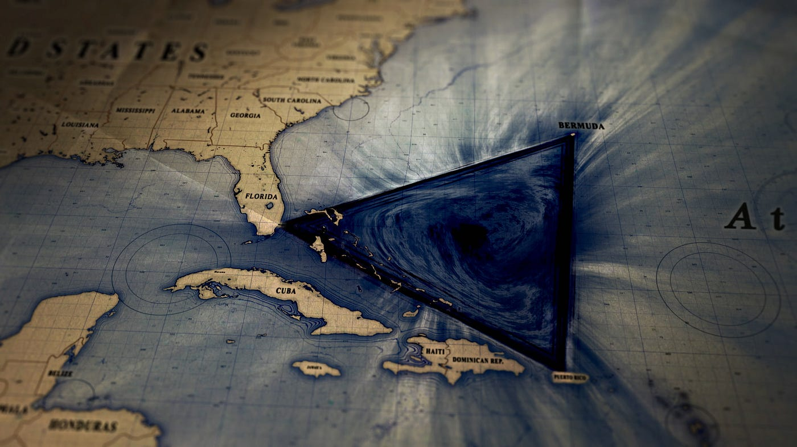

The Bermuda Triangle
{kind=link}
The Bermuda Triangle, also known as the Devil's Triangle, is a loosely defined region in the western part of the North Atlantic Ocean. It is infamous for a series of mysterious disappearances of ships, airplanes, and people. The boundaries of the triangle are typically said to connect Miami (Florida), Bermuda, and San Juan (Puerto Rico), forming a triangular area of approximately 500,000 square miles. The disappearances that have occurred within the Bermuda Triangle remain a subject of speculation. While some believe that supernatural forces or extraterrestrial involvement could explain the mysteries, others argue that natural phenomena, such as methane hydrate eruptions or magnetic anomalies, are more likely causes.
Read More...The Bloop

The Bloop is one of the most mysterious sounds ever recorded in the ocean. In 1997, the National Oceanic and Atmospheric Administration (NOAA) detected a powerful ultra-low frequency sound in the Pacific Ocean, using underwater microphones (hydrophones) as part of their monitoring system. This sound was far louder than any known animal noise and exhibited a frequency pattern consistent with biological origin, which initially led to widespread speculation that it could have been produced by a massive, unknown marine creature, possibly a giant, deep-sea organism.
Read More...